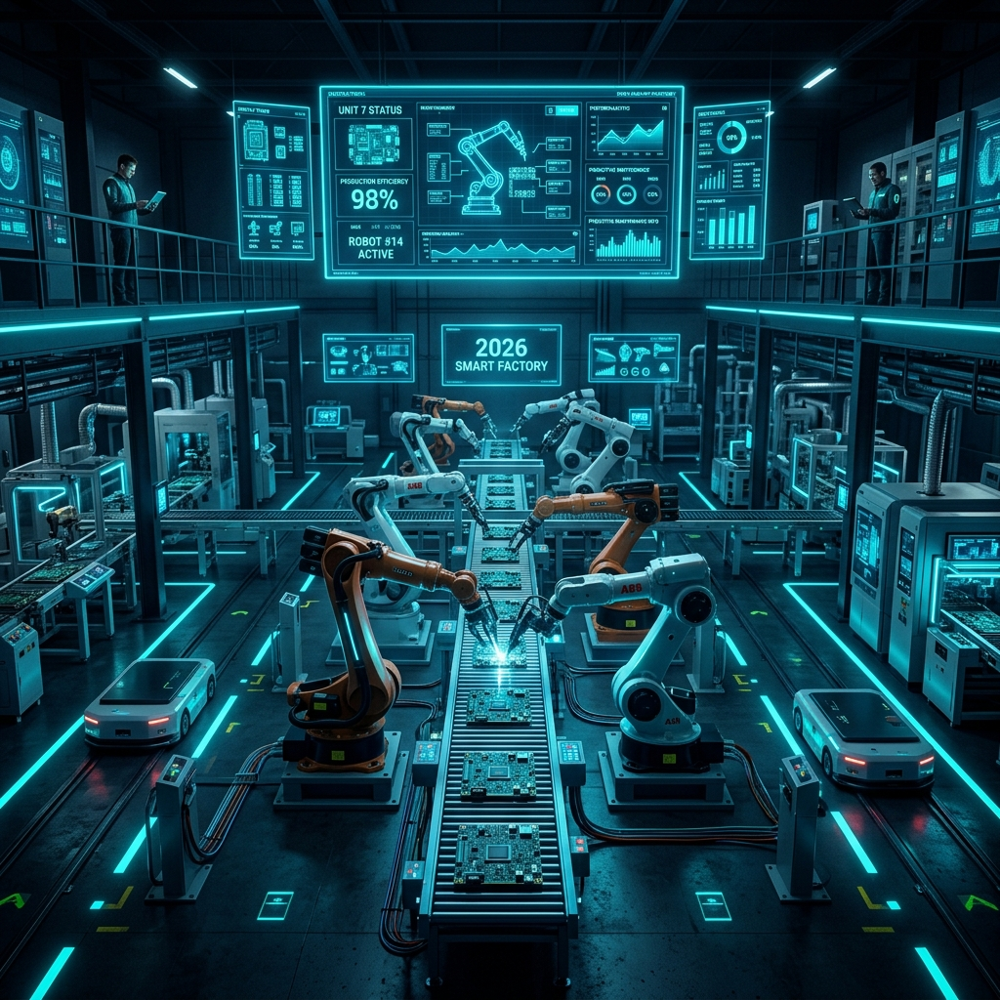

Análisis Detallado: Cómo Usar ChatGPT en la Programación de PLC, Robótica e Ingeniería de Proyectos

La integración de herramientas de Inteligencia Artificial Generativa como ChatGPT está transformando la forma en que los ingenieros de automatización en Saltillo, Ramos Arizpe y la industria global diseñan, programan y diagnostican proyectos industriales.
Contrario al mito de que la Inteligencia Artificial reemplazará a los ingenieros de control, la realidad en 2026 muestra todo lo contrario: ChatGPT se ha convertido en el copiloto de ingeniería definitivo, capaz de multiplicar hasta por 5x la velocidad en la creación de rutinas de código, estructuración de documentación técnica y solución de fallas complejas.
💡 Resumen de Aplicación Industrial:
ChatGPT no puede conectar físicamente un cable ni presionar un botón de inicio en planta, pero destaca excepcionalmente en 3 áreas: 1) Generación y optimización de código de PLC (SCL, ST, Python), 2) Creación de algoritmos y subrutinas para robots (FANUC, ABB, KUKA), y 3) Automatización de documentos de ingeniería (FDS, I/O Lists y traducción de alarmas).
1. Aplicación en la Programación de PLC (Siemens TIA Portal & Allen-Bradley)
Aunque la programación clásica en Diagrama de Escalera (Ladder - LAD) requiere representación gráfica, los lenguajes basados en texto como Structured Text (ST / IEC 61131-3) y SCL (Structured Control Language de Siemens) son ideales para ser generados mediante ChatGPT.
Ejemplo Real: Promedio de Temperatura de 10 Sensores Analógicos en SCL
Un ingeniero puede solicitarle a ChatGPT:
ChatGPT genera la estructura completa en segundos con variables de entrada, salida y bucles de control `FOR...DO`, ahorrándole al programador horas de codificación repetitiva.
2. Uso de ChatGPT en la Robótica Industrial (FANUC, ABB & KUKA)
En el campo de la robótica, ChatGPT apoya a los programadores de las siguientes maneras:
- Cálculos Matemáticos de Matrices y Trigonometría: Conversión de coordenadas de posición para trayectorias complejas de soldadura o paletizado.
- Generación de Código RAPID (ABB) y KRL (KUKA): Creación de rutinas de interrupción de seguridad y cálculo dinámico de cargas (Payload).
- Estructuración de Lógica HandlingTool para FANUC: Formateo de registros de posición (PR[ ]) y temporizadores de ciclo de Pick & Place.
3. Automatización en la Gestión de Proyectos de Ingeniería
El 40% del tiempo de un proyecto de automatización se invierte en documentación. ChatGPT acelera drásticamente esta fase:
- Listas de Entradas / Salidas (I/O List): Convierte descripciones narrativas de máquinas en tablas de direcciones físicas de PLC en formato CSV/Excel.
- Especificación de Diseño Funcional (FDS): Redacta manuales de operación y secuencias de ciclo para entregar al cliente final.
- Diagnóstico de Alarmas en Minutos: Si un variador de frecuencia (VFD) marca un código de falla hexadecimal arcano, ChatGPT interpreta el manual técnico y sugiere las 3 causas más probables de revisión en campo.
⚠️ Regla de Oro: Seguridad Industrial (Safety First)
ADVERTENCIA TÉCNICA: NUNCA se debe cargar código generado directamente por Inteligencia Artificial a un PLC o Robot real sin antes realizar una simulación fuera de línea (Off-line) y una validación rigurosa por un ingeniero certificado en planta. Las "alucinaciones" de los modelos de IA pueden generar movimientos inesperados de motores o pistones que pongan en riesgo la integridad física de las personas o la maquinaria.
⚡ Robologix Automation: Ingeniería de Vanguardia en Coahuila
En Robologix Automation combinamos las herramientas tecnológicas más avanzadas de Inteligencia Artificial con más de 15 años de experiencia real en piso de planta en Saltillo y Ramos Arizpe. Te ayudamos a desarrollar proyectos de PLC, integrar celdas robóticas o capacitar a tu equipo con constancia official STPS DC-3.
¿Deseas optimizar tus proyectos de automatización con tecnología de vanguardia?
Habla directamente con nuestro equipo de ingenieros especialistas en Coahuila.
WhatsApp Directo (+52 844 455 1869)